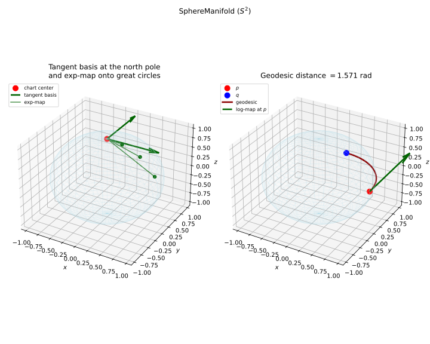

SphereManifold¶
(Source code, svg)


- class SphereManifold(*args)¶
Unit hypersphere manifold.
Warning
This class is experimental and likely to be modified in future releases. To use it, import the
openturns.experimentalsubmodule.The unit hypersphere
![\cS^{d-1}]() embedded in
embedded in ![\Rset^d]() with
the metric induced by the ambient Euclidean scalar product. Points are
unit-norm ambient vectors and tangent vectors at
with
the metric induced by the ambient Euclidean scalar product. Points are
unit-norm ambient vectors and tangent vectors at ![\vect{p}]() satisfy
satisfy
![\vect{v}^T \vect{p} = 0]() .
.The exponential and logarithmic maps are available in closed form along great circles, the geodesic distance is the angle between two points and the total volume is
![2 \pi^{d/2} / \Gamma(d/2)]() .
.- Parameters:
- dimensionint,
![\geq 2]()
Ambient dimension
![d]() , default value is 3.
, default value is 3.
- dimensionint,
Methods
expMap(basePoint, tangentVector)Exponential map at a base point.
Accessor to the ambient dimension.
Accessor to the object's name.
Accessor to the tolerance.
getExpMapVolumeDensity(coordinates)Volume density of the pushed-forward Lebesgue measure.
getGeodesicDistance(point1, point2)Geodesic distance between two manifold points.
Accessor to the intrinsic dimension.
getName()Accessor to the object's name.
getTangentBasis(basePoint)Orthonormal basis of the tangent space at a base point.
Total Riemannian volume of the manifold.
hasName()Test if the object is named.
isOnManifold(point)Check manifold membership up to the tolerance.
logMap(basePoint, point)Logarithmic map at a base point.
projectToManifold(point)Closest-point projection onto the manifold.
projectToTangentSpace(basePoint, vector)Orthogonal projection onto the tangent space at a base point.
setEpsilon(epsilon)Accessor to the tolerance.
setName(name)Accessor to the object's name.
See also
Notes
The following
ResourceMapkey is used:Manifold-Epsilon(Scalar, default:1e-10): tolerance used byisOnManifold()and the projections.
Examples
>>> import openturns as ot >>> import openturns.experimental as otexp >>> manifold = otexp.SphereManifold(3) >>> print(manifold.getIntrinsicDimension()) 2 >>> print(manifold.getVolume()) 12.5663706...
- __init__(*args)¶
- expMap(basePoint, tangentVector)¶
Exponential map at a base point.
- Parameters:
- basePointsequence of float
Base point on the manifold.
- tangentVectorsequence of float
Tangent vector at the base point.
- Returns:
- point
Point Image of the tangent vector on the manifold.
- point
- getAmbientDimension()¶
Accessor to the ambient dimension.
- Returns:
- ambientDimensionint
Dimension of the ambient Euclidean space.
- getClassName()¶
Accessor to the object’s name.
- Returns:
- class_namestr
The object class name (object.__class__.__name__).
- getEpsilon()¶
Accessor to the tolerance.
- Returns:
- epsilonfloat
Tolerance used by
isOnManifold()and the projections.
- getExpMapVolumeDensity(coordinates)¶
Volume density of the pushed-forward Lebesgue measure.
The exponential map pushes the Lebesgue measure of the intrinsic coordinate space onto the manifold; this density is its Radon-Nikodym derivative with respect to the Riemannian volume, evaluated at the given intrinsic coordinates in the
getTangentBasis()basis.- Parameters:
- coordinatessequence of float
Intrinsic coordinates in the tangent basis.
- Returns:
- densityfloat,
![> 0]()
Volume density at the given coordinates.
- densityfloat,
- getGeodesicDistance(point1, point2)¶
Geodesic distance between two manifold points.
- Parameters:
- point1sequence of float
First point of the manifold.
- point2sequence of float
Second point of the manifold.
- Returns:
- distancefloat
Geodesic distance between the two points.
- getIntrinsicDimension()¶
Accessor to the intrinsic dimension.
- Returns:
- intrinsicDimensionint
Dimension of the manifold as a Riemannian manifold.
- getName()¶
Accessor to the object’s name.
- Returns:
- namestr
The name of the object.
- getTangentBasis(basePoint)¶
Orthonormal basis of the tangent space at a base point.
- Parameters:
- basePointsequence of float
Base point on the manifold.
- Returns:
- basis
Sample Orthonormal ambient vectors spanning the tangent space.
- basis
- getVolume()¶
Total Riemannian volume of the manifold.
- Returns:
- volumefloat
Total volume of the manifold for its Riemannian metric.
- hasName()¶
Test if the object is named.
- Returns:
- hasNamebool
True if the name is not empty.
- isOnManifold(point)¶
Check manifold membership up to the tolerance.
- Parameters:
- pointsequence of float
Ambient vector.
- Returns:
- isOnManifoldbool
Whether the ambient vector lies on the manifold.
- logMap(basePoint, point)¶
Logarithmic map at a base point.
- Parameters:
- basePointsequence of float
Base point on the manifold.
- pointsequence of float
Point of the manifold.
- Returns:
- tangentVector
Point Preimage of the point in the tangent space at the base point.
- tangentVector
- projectToManifold(point)¶
Closest-point projection onto the manifold.
- Parameters:
- pointsequence of float
Ambient vector.
- Returns:
- projectedPoint
Point Projection of the ambient vector onto the manifold.
- projectedPoint
- projectToTangentSpace(basePoint, vector)¶
Orthogonal projection onto the tangent space at a base point.
- Parameters:
- basePointsequence of float
Base point on the manifold.
- vectorsequence of float
Ambient vector.
- Returns:
- tangentVector
Point Projection of the ambient vector onto the tangent space.
- tangentVector
- setEpsilon(epsilon)¶
Accessor to the tolerance.
- Parameters:
- epsilonfloat,
Tolerance used by
isOnManifold()and the projections.
- epsilonfloat,
- setName(name)¶
Accessor to the object’s name.
- Parameters:
- namestr
The name of the object.